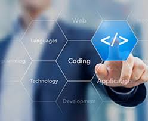

M1: To provide knowledge in the field of Computer Science & Technology.
M3: To provide hands-on practical knowledge for growing professional in the field of computer science by engaging them in self-learning process.
M4: To provide an environment for analytical and logical reasoning.
M5: To provide appropriate assistance that meets the need of the present and emerging computing technologies.
Vision Statement:
To attain excellence in the field of Computer Science and Technology.

Brief Profile of Department:
The Department of Computer Science & Technology is one of the oldest branch providing Diploma in Computer Science and Technology (DCST) established in the year 2000 at Bardang, East Sikkim. The vision of Government of Sikkim in empowering the youth with technical education thereby assuring a world class excellence in resources & work values was met with the initiation of this course. The constant merits in Institute reflects its position among all the colleges globally. The department has several tie-ups with companies of international repute to bridge the gap between course curriculum and latest technologies. It is a discipline where technologies and solution architectures change rapidly which also expands the scope of Computer Science and Engineering to provide students with an access to multidisciplinary problems and focus on total system engineering. Students here learn computer science and information technology principles that are critical while developing software, managing hardware and networking of computer systems. This program is designed to provide students with the fundamentals of computer science, both hardware and software, and the application of engineering concepts, techniques and methods to both computer systems engineering and software system design. The department has excellent laboratory and well equipped computing centre with high end server facilities that caters to the need of students and faculty for academics, research initiatives and consultancy.